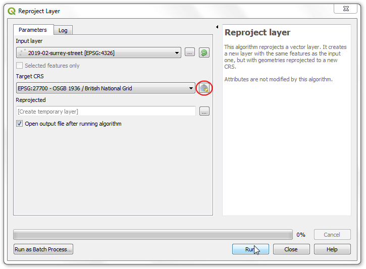
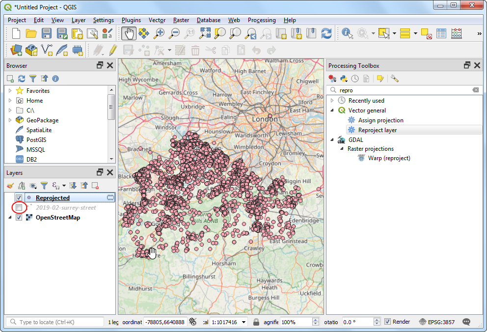

Ujaval Gandhi
Ujaval GandhiCrear Mapas de Calor (QGIS3)¶
Los mapas de calor son una de las mejores herramientas de visualización para datos densos de puntos. El mapa de calor es una técnica de interpolación que es útil para determinar la densidad de los objetos de entrada. Los mapas de calor son usados más comúnmente para visualizar datos de crimen, incidentes de tráfico, densidad de viviendas, etc. QGIS tiene un representador de mapa de calor que puede ser usado para dar estilo a una capa punto y un algoritmo de procesamiento Mapa de calor (Estimación de Densidad de Núcleo) que puede ser usado para crear un ráster a partir de una capa punto.
Vista general de la tarea¶
Trabajaremos con un conjunto de datos de ubicaciones de crímenes en Surrey, Reino Unido y crearemos un mapa de calor para visualizar regiones con alta densidad de crimen.
Otras habilidades que aprenderá¶
Usar campos virtuales y expresiones condicionales
Consigue la información¶
data.police.uk provee datos de crimen a nivel de calle, consecuencia, y parada y búsqueda en un formato CSV simple. Descargue los datos de la Policiía de Surrey y descomprima el archivo descargado para extraer el archivo CSV.
Para su comodidad, puede descargar directamente una copia del conjunto de datos del siguiente enlace:
Fuente de Datos [POLICEUK]
Procedimiento¶
We will first load a basemap layer from OpenStreetMap and then import the CSV data. In the Browser tab, scroll down and locate the XYZ Tiles section.

Expand it to see the OpenStreetMap tile layer. Drag and drop it to the main canvas. Next we will load the CSV file. Click the Open Data Source Manager button.

Cámbiese a la pestaña Texto Delimitado. Aquí importaremos los datos de crimen que vienen en un archivo de texto de formato CSV. Clic el botón … junto a Nombre de archivo y explore archivo descargado
2019-02-surrey-street.csv. El Campo X y Campo Y en la sección Definición de Geometría será autopoblado con las columnasLongitudy`Latitud. El SRC de Geometría debería dejarse en su definición predeterminadaEPSG:4326 - WGS 84. Asegúrese que los datos se ven correctos en el panel Datos de muestra y clic Añadir, seguido por Cerrar.

Verá 2 capas -
OpenStreetMapy2019-02-surrey-streetcargadas en el panel QGIS Capas. Haga clic-derecho a la capa2019-02-surrey-streety seleccione Zoom a la Capa.

Verá la capa de puntos de incidentes de crimen sobrepuesta sobre el mapa base OpenStreetMap. Acérquese y Desplácese para explorar los datos. Los datos son bastante densos y es difícil obtener una idea de donde hay una alta concentración de crimen. Aquí es donde una visualización de mapa de calor puede ser útil. Seleccione la capa
2019-02-surrey-streety clic el botón Abrir el panel de Estilo de Capa.

Seleccione
Mapa de Calorcomo el representador en el menú desplegable. El panel de Estilo de Capa es interactivo y puede ver inmediatamente el efecto de sus cambios reflejados en pantalla. Esta capa ahora será mostrada en la rampa de color predeterminada de escala de grises.

Un mapa de calor es típicamente representado usando una rampa de color amarillo–a-rojo o blanco–a-rojo donde la mayor concentración de puntos resultan en más calor. Clic en el menú desplegable Rampa de color y seleccione la rampa de color
Reds.

A continuación necesitará escoger un Radio. Este parámetro determina la vecindad circular alrededor de cada punto donde ese punto tendrá una influencia. Este valor dependerá grandemente en el tipo su dato de entrada. Para nuestros datos, asumamos que un incidente de crimen tendrá una influencia de hasta 5 kilómetros desde su ubicación. Note que el SRC del proyecto actual está definido como
EPSG:3857en la esquina inferior derecha. Este SRC tiene una unidad en metro, por lo que deberíamos especificar5000metros como el radio. Otro parámetro que está escondido de este menú es la Forma de núcleo. Esta es una función que determina como debería difundirse la influencia de un punto a lo largo del radio dado. El representador Mapa de Calor usa la funciónCuárticapara este cálculo. Hay otros tipos de núcleos comoTriangular,Uniforme,TripesoyEpanechnikovque pueden ser especificados cuando se use un método diferente de creación de mapa de calor descrito más adelante en este tutorial. Vea esta publicación para una buena explicación y guía para seleccionar el radio y forma de núcleo correctos.

La visualización del mapa de calor está lista. Podemos ajustar la Opacidad del mapa de calor en la sección Representación de Capa abajo. Establezcla la opacidad en
60 %de manera que pueda ver el mapa base junto con el mapa de calor.

Para varios tipos de análisis, el solo considerar la densidad de los puntos es suficiente. Pero algunas, veces, puede querer dar importancia diferente a cada punto. Un crimen más violento debería tener más influencia en el mapa de calor que un robo. De forma similar, algunas veces un punto puede representar múltiples observaciones en una sola ubicación que necesita ser tomado en cuenta en el análisis. Para hacer esto, tu puedes proporcionar un campo opcional numérico peso que especifica un valor para cada punto. Agreguemos un campo de peso y usémoslo para mejorar el mapa de calor. Haga clic-derecho en la capa
2019-02-surrey-streety seleccione Abrir Tabla de Atributos.

Verá un campo texto llamado
Crime typeen los datos de entrada que describe el tipo de crimen. Podemos usar estos para categorizar los diferentes tipos de crimen y asignar un peso mayor a los crímenes más violentos.

Clic en Abrir calculadora de campo.

Ahora ingresaremos una fórmula que usa el
Tipo de crimeny determina el valor de peso. QGIS tiene una forma práctica para agregar tales campos calculados usado Campos Virtuales. El campo virtual es guardado en el proyecto QGIS y no modifica los datos fuentes. También es calculado dinámicamente y puede ser usado en cualquier parte en QGIS tal como cualquier otro valor de atributo. Ingreseweightcomo el Nombre de campo de salida y defina el Tipo de campo de salida comoWhole number (integer). Ingrese la siguiente expresión en el Editor de expresión. Aquí estamos usando la declaración CASE para asignar valores diferentes basados en diferentes condiciones. Clic en Aceptar.
CASE WHEN "Crime type" LIKE 'Violence%' THEN 10 WHEN "Crime type" LIKE 'Criminal%' THEN 5 ELSE 1 END
Se agregará un nuevo atributo para cada entidad con el valor de peso apropiado.

De vuelta en el panel Estilo de Capa, clic en el menú desplegable para Dar peso a los puntos por y seleccione el campo
weightrecientemente agregado.

Verá que la representación del mapa de calor cambia para tomar en cuenta el parámetro de peso. Cierre el panel Estilo de Capa.

Si necesita que se guarde la visualización del mapa de calor como una capa ráster permanente o si quiere personalizar el mapa de calor con opciones avanzadas como núcleos diferentes o radio dinámico, puede usar el Mapa de calor (Estimación de Densidad Núcleo) de la Caja de Herramientas Procesos. Ahora usaremos este algoritmo. Vaya a .

Antes que podamos crear un mapa de calor, necesitamos reproyectar los datos fuentes a un SRC proyectado. Como la distancia juega un rol importante en el cálculo del mapa de calor, no es correcto usar un SRC geográfico. Busque el algoritmo .

En el diálogo Reproyectar capa, clic en el botón Seleccionar SRC para el SRC Destino. Busque el SRC
EPSG:27700 OSGB 1936 / British National Grid. Este SRC proyectado es una buena elección para datos en el Reino Unido. Clic en Ejecutar.

Se agregará una nueva capa llamada
Reprojectedal panel Capas. Desmarque la caja junto a la antigua capa2019-02-surrey-streetpara esconderla.

Busque el algoritmo .

En el diálogo Mapa de calor (Estimación de Densidad de Núcleo), usaremos los parámetros de antes. Seleccione Radio como
5000metros y Peso desde campo comopeso. Defina Tamaño de píxel X y Tamaño de píxel Y en50metros. Deje Forma de núcleo en el valor predeterminado deCuártico. Clic en Ejecutar.

Nota
El parámetro Radio del campo le permite especificar un radio dinámico de búsqueda para cada punto. Esto puede ser usado junto con Peso desde campo para tener un control fino de grano sobre se distribuye la influencia de cada punto.
Una vez que termine el procesamiento, se cargará una nueva capa ráster llamada
OUTPUT. La visualización predeterminada es fea ya que usa el representador ``Gris banda única`. Clic en el botón Abrir el panel de Estilo de Capa.

Cambie el representador a
Pseudocolor banda únicay seleccione la rampa de colorReds. La capa ahora se parece a la visualización de mapa de calor que habíamos creado antes.

Nota
Note que la capa OUTPUT en el panel Capas tiene una leyenda pero la capa 2019-02-surrey-street no tiene. Un problema común al usar una capa de mapa de calor creada por el representador Mapa de Calor es la falta de leyenda. Digamos que queremos usar el mapa de calor en el Diseñador y agregar una leyenda. Un mapa de calor ráster creado con el método algoritmo de procesamiento Mapa de Calor hace posible esto.
If you want to give feedback or share your experience with this tutorial, please comment below. (requires GitHub account)